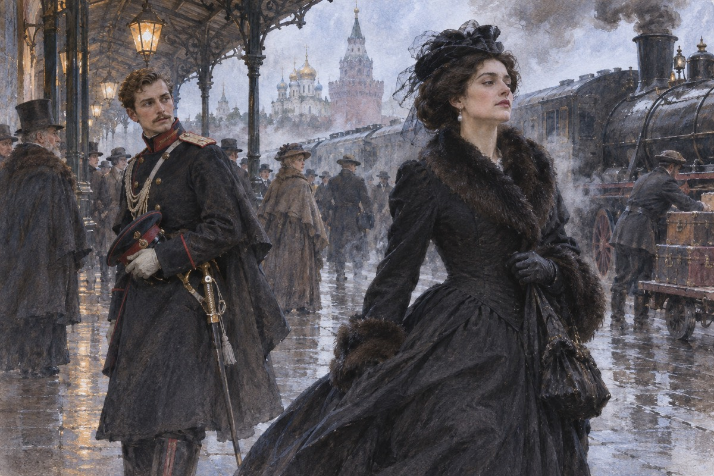
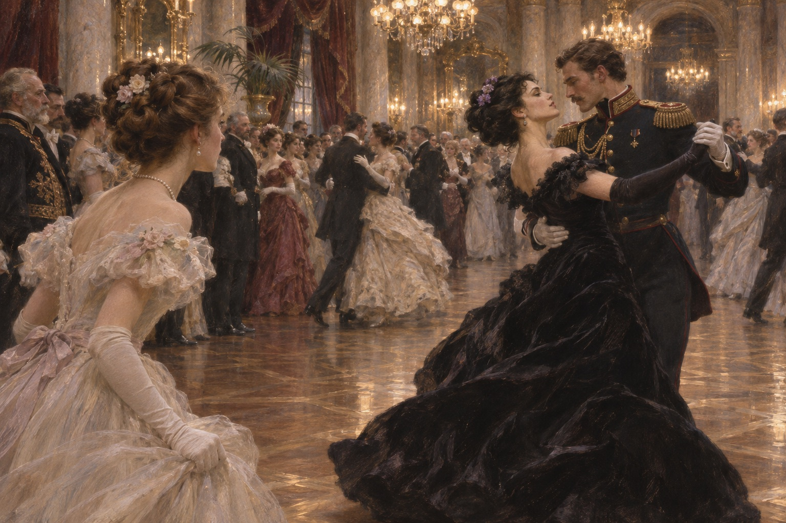
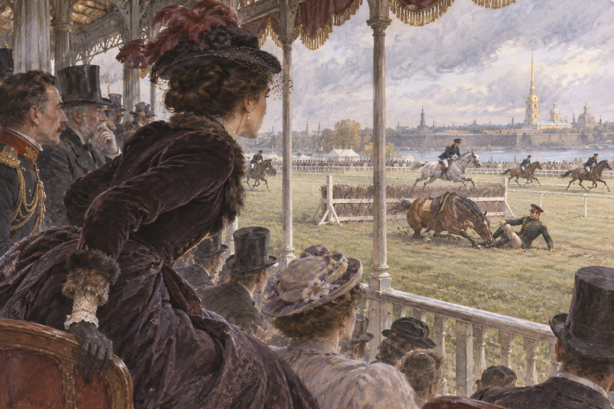
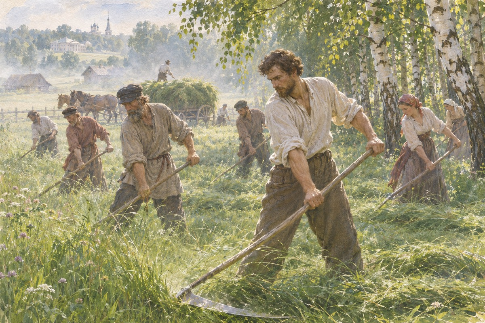
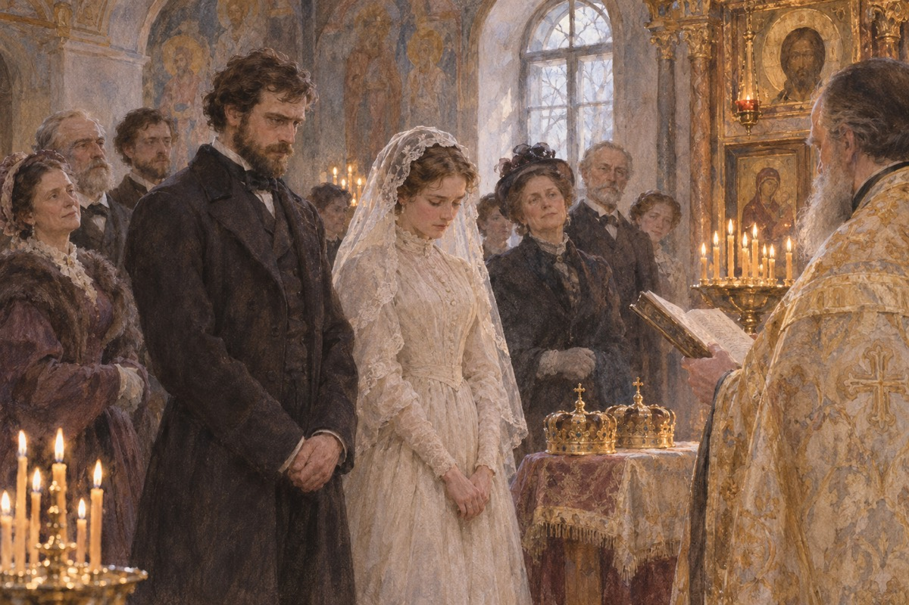
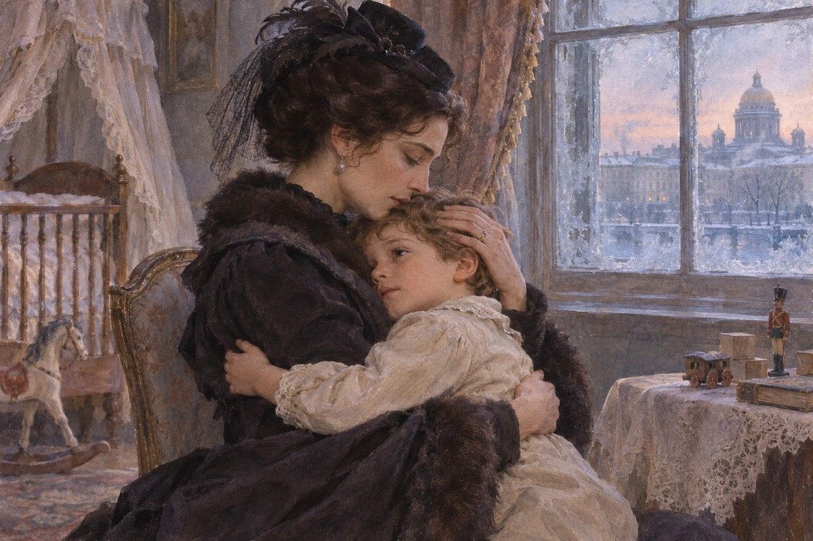

一个家庭
奥布隆斯基公爵跟家庭女教师有了事，妻子多莉知道了，把自己关在房间里，说：我要离婚。他去找妹妹安娜，请她来劝。安娜从彼得堡来，一进门就把事情摆平了。多莉说：你怎么这么会。安娜说：因为我也想过。多莉说：你怎么能替他说话。安娜说：我不是替他说话，我是替你。她说：你还有孩子。多莉哭了。多莉说：你要走了。她说：我明天走。她说：我一走，这屋子就安静了。
相遇
安娜在车站下车，渥伦斯基在站台上等母亲。两个人擦肩而过，都回头看了一眼。那天车站上有人被火车轧死，安娜说：这是不祥的兆头。渥伦斯基没听见。他后来一直记得她回头的那一刻。她说：你母亲在那边。他说：我知道。他说完，没有动。她说：你该过去了。他说：我马上过去。她说：你母亲在那边。他说：我知道。他说完，还是站着没动。

一支舞
基蒂等着渥伦斯基来请她跳玛祖卡。他来了，请了安娜。安娜说：你不该请我。他说：我想请。那一晚他们跳了三次，全屋子的人都在看。基蒂站在角落里，脸色白得像纸。贝特西公爵夫人站在旁边，说：她跳得真好。基蒂回家以后，把自己关在房间里，说：我病了。她母亲说：你没病。她说：那我为什么这么难受。基蒂回家以后，三天没有说话。她母亲说：你怎么了。她说：我没事。

列文
列文在乡下养牛、种地、打猎，写了一本关于农业的书，没人看。他爱基蒂，爱了很多年，一直不敢说。这次他进城求婚，基蒂说：对不起。他说：我明白了。他回乡下，一个人在田里站了一下午。列文说：我知道我不配。她说：不是配不配的问题。他说：那是什么。她说：是我还没有准备好。列文说：我知道我不配。她说：你别这么说。他说：我说的是实话。
丈夫
卡列宁是安娜的丈夫，比妻子大二十岁，做官做到了部长。他不爱她，也不需要她爱他。他每天看公文，吃饭，睡觉，按钟点。他听说妻子跟人往来以后，说：这是不体面的。他说的是「体面」，不是「痛」。他说：这件事，我们家从来没有过。她说：现在有了。他说：那你要我怎么办。她说：你从来只会问这一句。卡列宁说：这件事，我们家从来没有过。她说：现在有了。他说：那你要我怎么办。
承认
安娜在回家的火车上对丈夫说：我爱他。卡列宁说：你说什么。她说：我爱渥伦斯基。他说：你疯了。她说：我没有。他说：那你要我怎么办。她说：我不知道。他说：我要你维持体面。她说：我做不到。他说：你要想想谢廖沙。她说：我每天都在想。他说：那你就该留下。她说：留下做什么。他说：做一个母亲。他说：你要想想谢廖沙。她说：我每天都在想。他说：那你就留下。
摔倒
赛马那天，渥伦斯基的马在跳栏时摔倒，他从马上翻下来。安娜在观众席上叫了一声，站起来，脸色大变。卡列宁扶住她，说：你冷静。她说：我不能。他说：你让别人看见了。她说：我不在乎。那天晚上，他第一次说了「离婚」两个字。回家路上，他说：你今天让我很难堪。她说：我今天才知道，我还能难堪。他说：你变了。她说：我没有变，是你从来没有看见过我。回家路上，他说：你今天让我很难堪。她说：我今天才知道，我还会难堪。

出走
她生了一个女儿，产后高烧，差点死。她躺在床上对丈夫说：我恨你，可我也需要你。卡列宁原谅了她，说：我宽恕你。她好了以后，跟渥伦斯基去了意大利。她把儿子留在了彼得堡。她说：你为什么要原谅我。他说：因为这样我比你高。她说：你一辈子都想比我高。他说：我一辈子都在你下面。
出处 · 第 4 部
割草
列文跟农民一起割了一整天草。他笨，割得慢，手上起了泡。中午吃饭，农民给他一块面包和一把盐，他吃得比什么都香。他后来想：我读过那么多书，不如跟他们干一天活。农民说：先生，你割得不错。列文说：我割得不好。他说：你割得慢，可你没有停。列文后来一直记得这句话。农民说：先生，你割得不错。列文说：我割得不好。他说：你割得慢，可你没停。

列文结婚
列文跟基蒂结婚了。婚礼上他把戒指戴错了手，牧师提醒了两次。他们回到乡下，第一天就吵了一架，为了谁坐哪张椅子。第二天就好了。他后来写：婚姻不是幸福，是一件要天天做的事。基蒂说：我们以后会吵很多次架。列文说：那我们吵完就和好。她说：你怎么知道。他说：因为我不会走。

想儿子
安娜在意大利住了半年，越来越想念儿子谢廖沙。她回彼得堡，偷偷去看他。她在他生日那天早上溜进屋子，抱住他。他哭着说：妈妈，我以为你死了。她只待了十分钟，就被仆人请走了。她说：你还记得我吗。他说：我记得。她说：你记得我什么。他说：你身上有香味。她抱住他，哭了。

不让见
卡列宁说：你可以见他，但要有我在场。安娜说：你不必这样。他说：这是规矩。她说：你这个人，一辈子只信规矩。他说：规矩让我活到今天。她说：规矩让你死了。他抬起头，看了她一眼，什么也没说。他说：你要是爱他，就跟他走。她说：你这是在赶我。他说：我是在给你一条路。她说：你从来只会给路，不会留人。
没有名分
他们住在乡下，修了医院，办了学校，过得很体面。可彼得堡没有一个人来看他们。安娜说：我们是不是做错了。渥伦斯基说：我们没有做错。她说：那为什么没有人来。他说：因为他们怕。她说：他们不怕，他们只是不喜欢。她说：我们去莫斯科住吧。他说：去了也没人理我们。她说：总比在这儿发霉好。他说：在这儿至少我们是真的。
猜疑
渥伦斯基去参加选举，去了三天。安娜在家，一天写五封信。他回来，她说：你为什么不回信。他说：我忙。她说：你是不是见别人了。他说：你怎么能这样想。她说：我什么都想得出来。她开始喝酒，也开始吃吗啡。他把信放在桌上，说：你写了五封。她说：你一封也没回。他说：我不知道该说什么。她说：你以前很会说。
争吵
他们为一件小事吵了起来，为的是他要去开会。她说：你走了我就死。他说：你每次都说这句话。她说：那你就试试。他走了。她坐在屋子里，看着窗外的铁轨，看了很久。他走到门口，回头说：我晚上回来。她说：你不用回来。他说：你说什么。她说：没什么。门关上了。
基蒂
基蒂生了一个孩子，难产，昏了两天。列文站在产房外面，第一次觉得自己什么都不是。孩子生下来以后，他抱着那个小东西，忽然哭了出来。他说：我以为我会恨他。医生说：母子平安。列文说：她怎么样。医生说：她睡着了。他走进房间，看见她脸色白得像纸，忽然跪了下去。
铁轨
安娜去莫斯科找渥伦斯基。她在车站等车，看着一列货车慢慢进站。她想起第一次见面那天，有人被轧死。她走下去，站在铁轨中间，把包扔在一边。她想：我要惩罚他。火车来了。她想：他会后悔的。她又想：他不会。她看着车灯越来越近，忽然说了一句：我错了。没有人听见。她想：他会后悔的。她又想：他不会。她看着车灯，忽然说：我错了。
出处 · 第 7 部 第 31 章
之后
渥伦斯基在车站看见她的尸体，站了很久。此后他报名去了塞尔维亚战场，走之前把她的信全烧了。卡列宁把她的女儿接走，养在自己家里。陶丽去看过那个孩子一次。小说没有写渥伦斯基后来怎么样，也没有写那个孩子长大以后的事。
第八部 · 疑问
列文有一段日子想自杀。他把绳子藏起来，把枪锁起来，不敢一个人待着。他问自己：我为什么活着。没有人回答。后来一个农民跟他说：人活着是为了灵魂，不是为了肚子。他忽然明白了什么，又不太明白。他把绳子收起来，把枪放回柜子。他想：我总得活下去。他不知道为什么，可他知道自己还得活。
出处 · 第 8 部
列文重新理解日常生活
农人谈到应当为灵魂而活，使列文重新思考善与信仰从何而来。雷雨中他为基蒂和孩子深感担忧，回家后也仍会像过去那样烦躁。小说让他在这些依然具体的烦恼中体会到，人可以为生活的每一刻赋予向善的意义。
出处 · 第八部第11–19章